Służba
Działamy na rzecz dobra wspólnego, odpowiadając na konkretne potrzeby lokalne i globalne.

ŚLĄSK | ROTARY POLSKA | ROTARY INTERNATIONAL
Jesteśmy klubem Rotary działającym na terenie Górnego Śląska, a siedzibę mamy w Mikołowie. Łączymy ludzi dobrej woli, lokalny biznes, naukę, edukację, przyrodę i międzynarodową sieć Rotary, aby realizować projekty służące społeczności naszego regionu.
Aktualnie realizujemy ROTARY for PLANET — odpowiedzialne nasadzenia drzew na Śląsku
Kim jesteśmy
Rotary Klub Silesia jest śląskim klubem Rotary z siedzibą w Mikołowie.
Naszą dewizą jest: Służba ponad własne interesy. Działamy na rzecz ludzi, środowiska, edukacji i rozwoju lokalnych społeczności.
Działamy na rzecz dobra wspólnego, odpowiadając na konkretne potrzeby lokalne i globalne.
Łączymy ludzi, organizacje, firmy, szkoły, instytucje i samorządy wokół praktycznych projektów.
Rozwijamy działania środowiskowe, sadzenie drzew, edukację i ochronę bioróżnorodności.
Rotary
Międzynarodowa organizacja składająca się z dystryktów.
Obejmuje obszar całej Polski i obecnie składa się z 80 klubów.
Jest częścią Dystryktu 2231 i działa na Śląsku.
Fundament Rotary
Rotary opiera się na prostych, praktycznych zasadach etycznych. Dla RC Silesia nie są one wyłącznie deklaracją, lecz narzędziem codziennego działania: w projektach, partnerstwach, komunikacji, finansach, pracy z młodzieżą i współpracy z lokalnymi instytucjami.
W sprawach, o których myślimy, mówimy lub które robimy, pytamy:
Czy to jest prawda?
Czy to jest uczciwe wobec wszystkich zainteresowanych?
Czy zbuduje dobrą wolę i przyjaźń?
Czy będzie korzystne dla wszystkich zainteresowanych?
W praktyce RC Silesia oznacza to działanie na rzecz społeczności lokalnej, odpowiedzialne partnerstwa, przejrzystą komunikację i projekty, które mają realną wartość społeczną, edukacyjną lub środowiskową.
Działania Rotary koncentrują się wokół obszarów, które odpowiadają na najważniejsze wyzwania społeczne i środowiskowe.
W RC Silesia zasady Rotary przekładamy na konkretne działania: program ROTARY for PLANET, odpowiedzialne nasadzenia, współpracę ze Śląskim Ogrodem Botanicznym ZS, partnerstwa z lokalnym biznesem i instytucjami, wsparcie młodzieży oraz transparentną komunikację bez greenwashingu.
Członkostwo
Osoba aktywnie uczestnicząca w życiu Klubu, spotkaniach, decyzjach i realizacji celów statutowych.
Osoba wyróżniona przez Klub zgodnie z zasadami określonymi w statucie i praktyce rotariańskiej.
Osoba albo podmiot wspierający działalność Klubu organizacyjnie, rzeczowo, ekspercko lub finansowo.
Cele szczególne Klubu
Działania budujące porozumienie, dialog i współpracę między ludźmi, instytucjami i środowiskami.
Projekty zdrowotne, profilaktyczne i edukacyjne podnoszące jakość życia mieszkańców.
Dostarczanie czystej wody, warunków sanitarnych i higieny oraz lokalna edukacja wodna.
Programy rodzinne, społeczne i edukacyjne skierowane do dzieci, młodzieży i opiekunów.
Warsztaty, mentoring, lekcje terenowe oraz inicjatywy rozwijające wiedzę i kompetencje.
Wsparcie rozwoju ekonomicznego lokalnego otoczenia i odpowiedzialnych partnerstw.
Projekty przyrodnicze, drzewne, edukacyjne i bioróżnorodnościowe.
Sadzenie drzew, ochrona bioróżnorodności i edukacja ekologiczna ze Śląskim Ogrodem Botanicznym - właściwe miejsce, właściwy gatunek, pielęgnacja i monitoring.
Obszar: Ochrona środowiskaNajedź (lub dotknij) obszar, aby zobaczyć jego lokalną realizację w ósmym kafelku.
Globalna inicjatywa Rotary
ROTARY for PLANET to globalna inicjatywa sadzenia drzew rozwijana w społeczności Rotary, opisana na stronie Rotary Polska jako program angażujący członków Rotary, przyjaciół i sympatyków. Jej ideą jest prosta zasada: jeden Rotarianin - jedno nowe drzewo. Pomysłodawczynią programu jest Małgorzata Szymczyk, Prezydent RC Katowice w kadencjach 2020/2021 i 2021/2022, dziś Prezydent RC Silesia. Klub uczestniczy w programie od pierwszej edycji i współtworzy jego lokalny wymiar na Górnym Śląsku.
Rotary liczy około 1,2 miliona członków. Program przekłada tę skalę na konkretne, odpowiedzialne nasadzenia.
Wystartowała z udziałem klubów z Polski, Ukrainy, Czech, Turcji i Cypru.
W pierwszą sobotę listopada po Wszystkich Świętych odbywa się międzynarodowe spotkanie programu.
Partner merytoryczny programu na Górnym Śląsku - bioróżnorodność, dobór gatunków i odpowiedzialne nasadzenia.
Wartością jest dopiero właściwy dobór lokalizacji, gatunku, pielęgnacji i monitoringu przeżywalności. Jedno drzewo może pochłaniać do 48 kg dwutlenku węgla rocznie, ale efekt programu komunikujemy wyłącznie z dokumentacją.
Poniższe materiały pochodzą ze strony Rotary Polska i opisują pierwotne założenia programu ROTARY for PLANET / 1,2 miliona drzew. Dokumenty lokalne RC Silesia opisują model wdrożeniowy programu na Górnym Śląsku i nie zastępują materiałów źródłowych Rotary Polska.
Oficjalna wzmianka o programie Rotary for Planet: 1,2 miliona drzew.
Przejdź do Rotary Polska →Prezentacja PDF programu, zawierająca m.in. założenie 1 Rotarianin to 1 nowe drzewo, etapy projektu, identyfikację wizualną, aplikację i dokumentację pierwszej edycji.
Pobierz prezentację ↓Strona Rotary Polska wskazuje film jako materiał źródłowy programu, jednak obecny link YouTube wymaga weryfikacji. Po uzyskaniu aktualnego adresu filmu link zostanie uzupełniony.
Link do aktualizacjiDokumentacja fotograficzna
Dokumentujemy spotkania, projekty, działania partnerskie i akcje ROTARY for PLANET. Publikujemy wyłącznie materiały dopuszczone do publikacji, z poszanowaniem praw do wizerunku, praw autorskich i zasad komunikacji partnerów.
Wersja demonstracyjna galerii. Docelowe zdjęcia zostaną dodane po zatwierdzeniu materiałów i zgód na publikację.
Młodzież i nowe pokolenia
Rotary inwestuje w młodych ludzi przez międzynarodową wymianę młodzieży oraz kluby Rotaract, które łączą rozwój, przyjaźń i służbę społeczną. RC Silesia może włączać się w te programy jako klub przyjmujący, wysyłający lub patronujący.
Międzynarodowy program wymiany młodzieży Rotary, skierowany do młodych ludzi w wieku szkolnym (ok. 15-19 lat). Obejmuje wymiany długoterminowe (rok szkolny) i krótkoterminowe; uczestnicy mieszkają u rodzin goszczących, poznają język i kulturę oraz budują postawy otwartości. Wymianę organizują kluby Rotary i dystrykty.
Ruch i kluby dla młodych dorosłych (zwykle od 18 lat), działające we współpracy z Rotary. Rotaractorzy realizują własne projekty społeczne i zawodowe, rozwijają kompetencje liderskie i korzystają z międzynarodowej sieci Rotary - to naturalna ścieżka zaangażowania młodszego pokolenia.
Projekty i partnerstwa
Partner merytoryczny w zakresie bioróżnorodności, edukacji ekologicznej, standardu nasadzeń i odpowiedzialnego planowania.
Miejsce spotkań klubu i potencjalna przestrzeń wydarzeń integracyjnych, charytatywnych i partnerskich.
Partnerzy społecznej odpowiedzialności biznesu, sponsorzy projektów i uczestnicy wolontariatu pracowniczego.
Partnerzy edukacji, wolontariatu i programów obywatelskich.
Współpraca klubowa oparta na podpisanych porozumieniach i wspólnych działaniach.
Władze Klubu
Rozdzielamy strukturę statutową Klubu od osób pełniących funkcje organizacyjne. Dane osobowe wymagają finalnego potwierdzenia przed publikacją produkcyjną.
Kadencja Zarządu i Komisji Rewizyjnej trwa 2 lata rotariańskie. Rok rotariański trwa od 1 lipca do 30 czerwca.
Paragraf 18 Statutu RC Silesia
Liczba członków zwyczajnych: [DO UZUPEŁNIENIA - aktualny stan i data].
Paragraf 19 Statutu RC Silesia
Od 3 do 7 członków: Prezydent (Prezes Zarządu), Wiceprezydent, Sekretarz, Skarbnik oraz inni czynni członkowie Klubu.
[DO POTWIERDZENIA - czy Zarząd ma także osobę pełniącą funkcję Wiceprezydenta.]
Paragraf 20 Statutu RC Silesia
Komisja Rewizyjna składa się z 3 członków.
Lista robocza do potwierdzenia przed publikacją produkcyjną.
Prezydent Klubu / Prezes Zarządu
Koordynuje pracę Klubu i reprezentuje go zgodnie z zasadami statutowymi.
Sekretarz
Wspiera obieg informacji, dokumentację i organizację pracy Klubu.
Skarbnik
Prowadzi finanse Klubu, składki członkowskie i rozliczenia zgodnie z zasadami statutowymi.
Członek Zarządu
Współuczestniczy w pracach Zarządu i wspiera realizację zadań statutowych Klubu.
Dane osób funkcyjnych są przeznaczone do potwierdzenia przed publikacją produkcyjną.
Do składania oświadczeń woli w imieniu Klubu uprawnieni są Prezes Zarządu wraz z Członkiem Zarządu albo dwóch Członków Zarządu działających łącznie. Do zaciągania zobowiązań majątkowych powyżej 5000 zł uprawniony jest Prezes Zarządu lub Członek Zarządu wraz ze Skarbnikiem.
Dołącz do działania
Aktualności i media
Publikacje powinny mieć właściciela merytorycznego, status projektu, datę, zgodę na zdjęcia oraz sprawdzone dane partnerów.
Komunikat do publikacji po zatwierdzeniu porozumienia i danych partnerów.
Ścieżka dla firm, szkół, instytucji i mieszkańców zgłaszających lokalizacje.
Kalendarium klubu
Chronologiczny rejestr spotkań, prelekcji, wydarzeń klubowych i kamieni milowych. Wersja demonstracyjna została odtworzona roboczo na podstawie publicznych źródeł i materiałów klubowych. Lista nie jest jeszcze pełnym archiwum i wymaga zatwierdzenia przez RC Silesia.
Golf Park Mikołów, ul. Golfowa 2, 43-190 Mikołów
Kalendarium jest w trakcie uzupełniania. Brakujące spotkania zostaną dodane po weryfikacji wpisów Facebook, materiałów klubowych i informacji od członków.
Teatr Mały w Tychach
Wydarzenie charytatywne RC Silesia. Wpis powinien zostać ujęty jako wydarzenie klubowe, nie jako regularne spotkanie członkowskie.
Rotary PolskaGolf Park Mikołów
Uroczystość charteru RC Silesia, przekazania pinów członkom charterowym oraz oficjalnego rozpoczęcia działalności klubu. Wpis wymaga zatwierdzenia i ewentualnego uzupełnienia przez klub.
Rotary Polska / materiały kluboweGolf Park Mikołów
Spotkanie klubowe zapowiedziane przez RC Silesia. Temat wymaga uzupełnienia o pełny opis i dane prelegenta przed publikacją produkcyjną.
Facebook RC SilesiaPrelegent: Sebastian Owczarski
Golf Park Mikołów
Spotkanie zapowiedziane jako wystąpienie dotyczące m.in. inwestowania, zmiany myślenia na Bali, piękna Bali, historii, kultury oraz wierzeń wyspy.
Facebook RC Silesia / Rotary PolskaGolf Park Mikołów
Zapowiedź spotkania RC Silesia poświęconego Azji i Bliskiemu Wschodowi. Wpis wymaga uzupełnienia o pełną agendę, prelegenta i opis.
Rotary Polska / Facebookdo ustalenia
Kalendarium nie obejmuje jeszcze wszystkich spotkań RC Silesia. Brakujące wpisy zostaną uzupełnione po ręcznej weryfikacji postów Facebook, materiałów klubowych i informacji od członków.
Jeżeli pamiętasz spotkanie, referat, wydarzenie lub dysponujesz linkiem do wpisu z Facebooka RC Silesia, prześlij informację przez formularz kontaktowy.
Zgłoś brakujące spotkanieTransparentność
RC Silesia publikuje podstawowe dane formalne, aby zapewnić transparentność działania, ułatwić kontakt instytucjom i partnerom oraz umożliwić weryfikację statusu stowarzyszenia.
Numer konta i zasady przyjmowania darowizn wymagają finalnego potwierdzenia przed publikacją produkcyjną.
Pełną listę dokumentów do pobrania znajdziesz w sekcji Dokumenty do pobrania.
Sekcja dokumentów zawiera tytuły, opisy, statusy robocze i pliki źródłowe do pobrania.
Dokumenty
Dokumenty lokalne RC Silesia opisują model wdrożeniowy programu na Górnym Śląsku. Nie są oficjalnymi dokumentami Rotary Polska i wymagają zatwierdzenia przed publikacją produkcyjną.
Wersje DOCX służą do pracy roboczej. Na stronie produkcyjnej preferowane będą dokumenty PDF zatwierdzone do publikacji.
Materiały źródłowe programu ROTARY for PLANET znajdują się w sekcji ROTARY for PLANET. Przejdź do materiałów źródłowych ROTARY for PLANET.
Ta grupa obejmuje dokumenty robocze i lokalne materiały operacyjne RC Silesia. Nie zastępują one materiałów źródłowych Rotary Polska.
Lokalny dokument RC Silesia. Wersja DOCX przeznaczona do pracy roboczej i weryfikacji. W wersji produkcyjnej rekomendowana jest publikacja zatwierdzonego PDF.
PobierzLokalny dokument wdrożeniowy RC Silesia / ŚOB ZS. Wersja DOCX zawierająca dokumenty D1-D14, statuty Stron oraz analizę porównawczą celów statutowych. Dokument nie jest wersją finalną i wymaga zatwierdzenia przed publikacją produkcyjną.
PobierzWpłaty i wsparcie
Wybierz rodzaj wpłaty. Każdy strumień ma inny charakter księgowy: darowizna na cele statutowe, składka członkowska oraz wpłata na wydarzenie lub partnerstwo to trzy różne kategorie.
Darowizna, składka członkowska i wpłata na wydarzenie są rozdzielone, ponieważ mają różny charakter organizacyjny i księgowy.
Dla sympatyków, firm i partnerów — na cele statutowe i program ROTARY for PLANET.
Dane wpisane w tej makiecie nie są wysyłane. Po uruchomieniu płatności online administrator danych, cel, podstawa prawna, odbiorcy, okres przechowywania i prawa osoby wpłacającej będą opisane w zatwierdzonej klauzuli RODO przed przyciskiem płatności.
Przelicznik „kwota = liczba drzew” podamy dopiero po ustaleniu rzeczywistego kosztu nasadzenia i pielęgnacji — zgodnie ze standardem antygreenwashingowym nie publikujemy szacunków bez pokrycia.
Dla członków Klubu. Składka członkowska nie jest darowizną i ma inną klasyfikację księgową.
Ujednolicony tytuł przelewu ułatwia Skarbnikowi przypisanie wpłaty. Składki rozliczane są odrębnie od darowizn.
Wpisowe na wydarzenie, udział w turnieju lub kolacji charytatywnej, pakiet sponsorski, członkostwo wspierające.
Wpłaty na wydarzenia i partnerstwa są klasyfikowane odrębnie od darowizn i składek.
Sugerowane tytuły przelewu:
Numer konta i zasady przyjmowania wpłat wymagają finalnego potwierdzenia przed publikacją produkcyjną.
RC Silesia przyjmuje Przelewy24 jako rekomendowanego operatora zewnętrznego do dalszego wdrożenia płatności online. Wybór wynika z dostępności raportów transakcji, eksportów dla skarbnika i księgowości oraz możliwości późniejszej integracji z panelem ngOs przez REST API.
Status: rekomendacja zaakceptowana koncepcyjnie. Płatności online zostaną uruchomione dopiero po założeniu konta Przelewy24, konfiguracji operatora i decyzji Zarządu.
Koszty według aktualnego cennika operatora - do weryfikacji przed zawarciem umowy.
Po konfiguracji konta Przelewy24 w tym miejscu mogą pojawić się osobne ścieżki płatności dla darowizn, składek członkowskich oraz wpłat wydarzeniowych.
Warunki, które muszą zostać spełnione przed włączeniem realnych płatności:
Niniejszy moduł jest makietą. Decyzje o uruchomieniu płatności, klasyfikacji wpłat oraz formie potwierdzeń należą do Zarządu i księgowości RC Silesia.
Kontakt
Wybierz temat kontaktu. Formularz dopasuje pola do rodzaju sprawy i przygotuje wiadomość do właściwej obsługi przez klub.
Ta wersja demonstracyjna nie ładuje zewnętrznych treści społecznościowych bez kliknięcia użytkownika. W wersji produkcyjnej pojawi się pełny mechanizm zgód cookies, jeżeli zostaną uruchomione narzędzia analityczne, marketingowe lub zewnętrzne embed-y.
Obserwuj nas
Co słychać w RC Silesia?
Obserwuj nasze oficjalne kanały społecznościowe. Treści pochodzą z zewnętrznych platform i mogą wymagać załadowania osadzonego widgetu.
Demonstracyjny szkic raportu z wydarzeń i materiałów tygodnia, bez automatycznej wysyłki e-mail.
Treści zewnętrzne są ładowane dopiero po kliknięciu. Mogą pochodzić z platform niezależnych od RC Silesia i podlegać ich własnym zasadom prywatności.
Facebook
Aktualności, zaproszenia i relacje z oficjalnego profilu RC Silesia.
Instagram
Zdjęcia i relacje z wydarzeń, spotkań oraz działań ROTARY for PLANET.
YouTube
Filmy, rozmowy, relacje i materiały edukacyjne.
PLAYLIST_ID wymaga podmiany po utworzeniu oficjalnego kanału lub playlisty.
LinkedIn
Partnerstwa, biznes, CSR, członkowie wspierający i współpraca lokalna.
X
Krótkie komunikaty, linki i bieżące informacje.
RC Silesia w mediach
Materiały z JazzTV, Radio Silesia, portali lokalnych i innych mediów oraz demonstracyjny newsletter tygodniowy.
Newsletter tygodniowy RC Silesia
Automatyczny szkic raportu z najciekawszymi wydarzeniami tygodnia. Wersja demonstracyjna - bez wysyłki e-mail.
Status: draft / wymaga zatwierdzenia
Otwórz podgląd newsletteraMateriał medialny - do uzupełnienia
Otwórz materiałWywiad - do uzupełnienia
Otwórz materiałInformacja prasowa - do uzupełnienia
Otwórz materiał